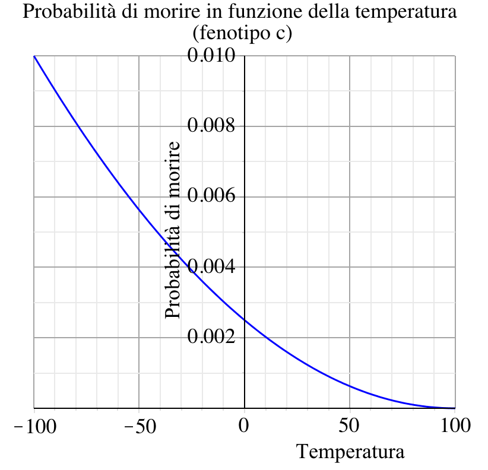
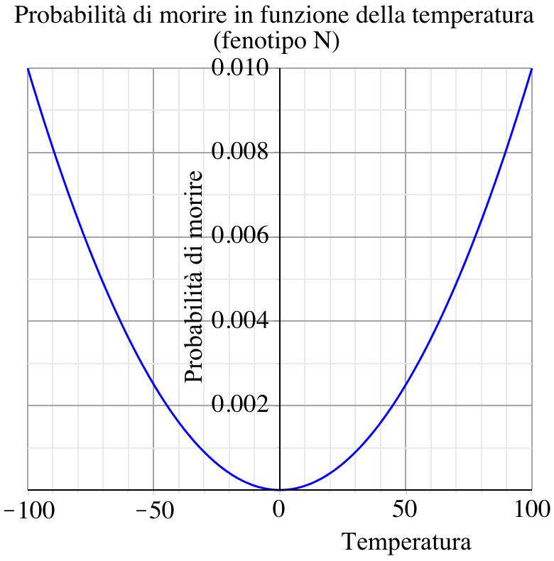
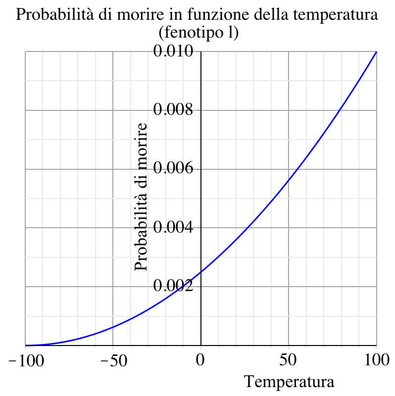

Creatures
Behaviour
The creatures, at each tick, calculate which is the best chunk to go to, in a range of 7 x 7 chunks, considering the quantity of food and the distance from their current position. Once they reach the chosen one, the creatures eat, increasing their energy level and decreasing the quantity of food in that chunk. At each tick, creatures also lose a fraction of their vital energy.
Reproduction
The sexual reproduction between two creatures takes place also in a range of 7 x 7 chunks. In particular, if two of them have enough energy, they reproduce, giving birth to a new creature that inherits a combination of parents’ genetic characteristics with some mutations. During the reproduction, parents lose a part of their energy and give it the new creature. (Figure 3 shows the flowchart of creatures behaviour)
Death causes
Creatures die for three reasons:
- Old age: age limit is calculated at birth, based on a random number with a gaussian trend (the average is 1000 ticks and the standard deviation is 200 ticks)
-
Temperature: each creature has its own genotype of the resistance to temperature (similar to fur length). In particular there are 3 different alleles: a dominant allele (N), and two recessive alleles (l and c), respectively fitted for lower and higher temperatures. Consequently the possible genotypes are homozygous (NN, ll, cc) or heterozygous (Nl, Nc, lc). NN, Nl, Nc and lc genotypes are fit for mild zones (coloured with white, Figure 2) and usually die in chunk with extreme temperatures; ll and cc genotypes respectively resist to lower temperatures and higher temperatures. At each tick, every creature has a determined probability of death based on its genotype and the temperature in its chunk.
-
Starvation: if a creature cannot find enough food for a certain number of ticks, the energy drops under a minimum level and the creature dies.

Death probability related to temperature (phenotype c)

Death probability related to temperature (phenotype N)

Death probability related to temperature (phenotype l)
Genetic characteristics
The creatures are characterized by different genes, transmitted during the reproduction. There are three different types of genes:
- Numerical genes: they are expressed by a number that represent the phenotype. During the reproduction, numerical genes of the new creature are calculated one by one multi- plying the initial value with a random number (with a gaussian trend of average 1). They are:
- agility, the moving attitude of a creature;
- bigness, the size of a creature;
- fertility, the number of minimum ticks that should pass between two consecutive reproductions, it is inversely proportional to the minimum energy level needed for a reproduction;
- num control, a numerical gene used as control-gene (it has no phenotypic effects);
-
Mendelian genes are characterized by a genotype made up of a couple of alleles, and a phenotype, calculated acoording to the laws of genetics. In the reproduction the two alleles of each gene are trasmitted choosing them one per parent. They are:
- temp resist, the ability of a creature to resist to a certain temperature; the alleles are c,l (recessive) and N (dominant);
-
mndl control, a control-gene without phenotypic effects, the alleles are a (recessive) and A (dominant);
- The secondary genes are numerical genes, calculated on other numerical genes of a crea- ture. They are:
- speed, defined as 2 · agility/bigness.